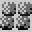
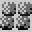

游戏说明
已经厌倦征战生活的你准备告老还乡做一名朴实的农民， 下面我来告诉你田园生活的玩法：
操作说明：用鼠标移动光标 至地图上你想移动到的位置并点击左键，地图上会显示一个相应的标记，
同时人物会移动至该处，标记中的数字表示移动的步数，步数达到上限后人物需要原地休息至气槽恢复满后方可继续移动。
至地图上你想移动到的位置并点击左键，地图上会显示一个相应的标记，
同时人物会移动至该处，标记中的数字表示移动的步数，步数达到上限后人物需要原地休息至气槽恢复满后方可继续移动。
游戏规则：田园生活的目的是为了在广阔的沙漠上种出一片绿洲，你可以通过底部操作栏选择各种指令，
在种植任何植物之前必须在沙土层铺上一层草 (想起沙丘魔堡的规则了吗)，
然后就可以在草丛上种植任何植物了，比如，种下去的植物会定时返钱哦(正所谓有付出就有回报嘛)，
但是植物生长一段时间后会进入枯萎状态，此时需要选择浇水指令
(想起沙丘魔堡的规则了吗)，
然后就可以在草丛上种植任何植物了，比如，种下去的植物会定时返钱哦(正所谓有付出就有回报嘛)，
但是植物生长一段时间后会进入枯萎状态，此时需要选择浇水指令 重新激活植物，
当种植面积扩张后频繁浇水会成为一项麻烦的辛苦活儿，此时如果你的等级提升至一定级别，操作栏中会出现帮手选项，花点小钱买一个吧，他会帮你搞定一切麻烦。
重新激活植物，
当种植面积扩张后频繁浇水会成为一项麻烦的辛苦活儿，此时如果你的等级提升至一定级别，操作栏中会出现帮手选项，花点小钱买一个吧，他会帮你搞定一切麻烦。
然而好景不长，就在你开心的收获时，可恶的鳄鱼 又出现了，但这一次它们的目标并不是你，而是你辛苦种植的庄稼，
此时你需要购买一些地雷
又出现了，但这一次它们的目标并不是你，而是你辛苦种植的庄稼，
此时你需要购买一些地雷 安放在庄稼的周围，鳄鱼踩到地雷上会被炸的粉身碎骨(很爽吧)。
安放在庄稼的周围，鳄鱼踩到地雷上会被炸的粉身碎骨(很爽吧)。
随着等级的提升可种植的植物会越来越多，越高级的植物所获得的钱也越多哦。
通关条件：升级至所有隐藏植物出现，并且所有植物在地图上至少存活5个。
结束条件：所有植物被鳄鱼啃光。
我明白了，开始游戏吧！